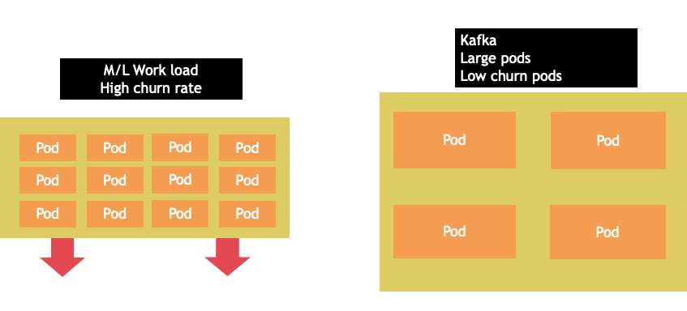
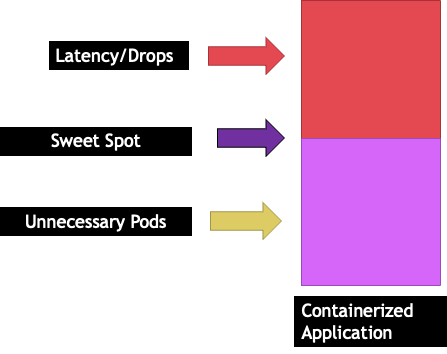
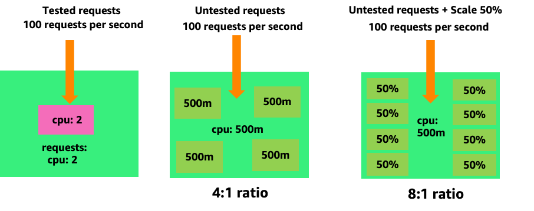
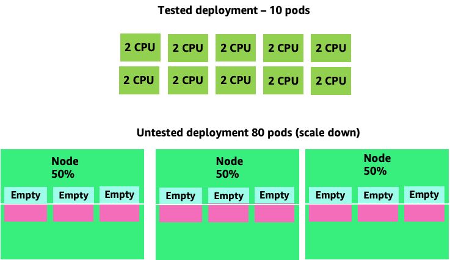
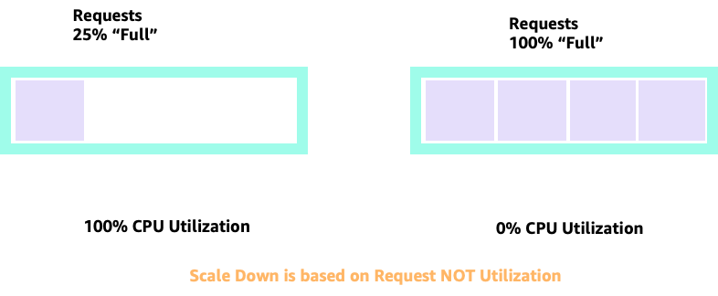
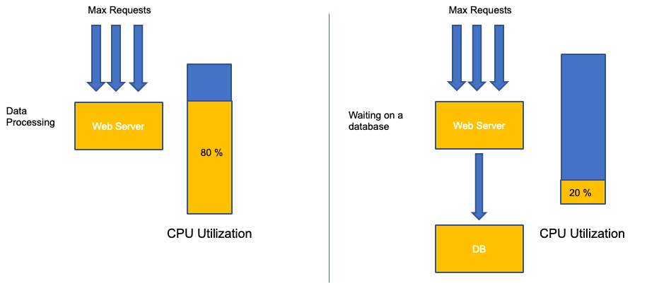
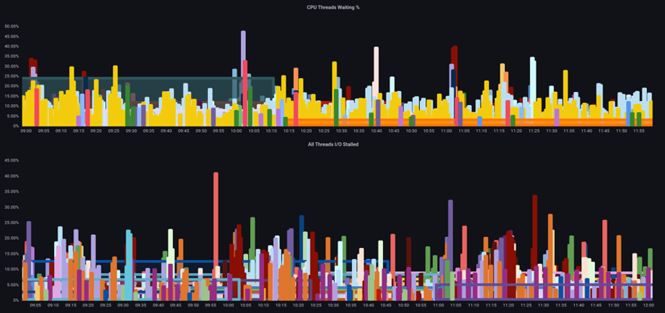
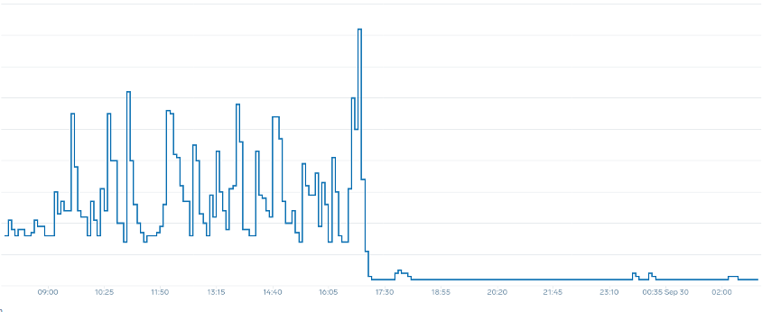
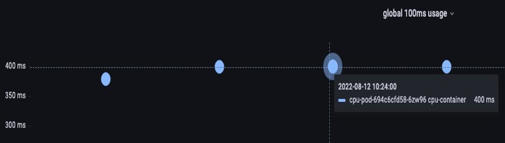

Node 和工作負載效率¶
提高我們工作負載和節點的效率可以降低複雜性/成本,同時提高性能和擴展性。在規劃這種效率時需要考慮很多因素,最簡單的方法是權衡取捨,而不是為每個功能設置一個最佳實踐。讓我們在以下部分深入探討這些權衡取捨。
節點選擇¶
使用稍大一些的節點大小(4-12xlarge)可以增加我們運行 pod 的可用空間,因為它降低了節點用於"開銷"(如 DaemonSets 和 Reserves 用於系統組件)的百分比。在下面的圖表中,我們可以看到 2xlarge 和 8xlarge 系統之間的可用空間差異,只有適度數量的 DaemonSets。
Note
由於 k8s 通常是以水平方式擴展,對於大多數應用程序來說,採用 NUMA 大小的節點並不合理,因此建議使用以下範圍內的節點大小。

大節點大小允許我們每個節點有更高百分比的可用空間。但是,這種模型可能會被過度利用,導致錯誤或飽和節點。監控節點飽和度是成功使用更大節點大小的關鍵。
節點選擇很少是一刀切的。通常最好將具有不同變化率的工作負載分成不同的節點組。具有高變化率的小批量工作負載最適合 4xlarge 系列實例,而像 Kafka 這樣需要 8 個 vCPU 且變化率低的大規模應用程序更適合 12xlarge 系列。

Tip
考慮非常大的節點大小的另一個因素是,由於 CGROUPS 不會隱藏容器化應用程序的總 vCPU 數,動態運行時可能會意外生成大量 OS 線程,從而產生難以排查的延遲。對於這些應用程序,建議使用 CPU 固定。有關此主題的更深入探討,請參見以下視頻 https://www.youtube.com/watch?v=NqtfDy_KAqg
節點裝箱¶
Kubernetes 與 Linux 規則¶
在 Kubernetes 上處理工作負載時,我們需要注意兩組規則。Kubernetes 調度程序使用請求值來調度 pod 到節點上的規則,以及 pod 被調度後發生的情況,這屬於 Linux 的範疇,而不是 Kubernetes。
Kubernetes 調度程序完成後,一組新的規則就開始起作用,即 Linux 完全公平調度器(CFS)。關鍵是 Linux CFS 沒有核心的概念。我們將討論為什麼以核心為中心的思維方式會導致優化工作負載擴展性的重大問題。
以核心為中心的思維¶
困惑開始於 Kubernetes 調度程序確實有核心的概念。從 Kubernetes 調度程序的角度來看,如果我們看到一個節點有 4 個 NGINX pod,每個 pod 都設置了一個核心的請求,節點看起來會像這樣。

但是,讓我們做一個思維實驗,看看從 Linux CFS 的角度來看是多麼不同。使用 Linux CFS 系統時最重要的是要記住:繁忙的容器(CGROUPS)是唯一計入共享系統的容器。在這種情況下,只有第一個容器繁忙,所以它被允許使用節點上的所有 4 個核心。

為什麼這很重要?假設我們在開發集群中運行性能測試,其中 NGINX 應用程序是該節點上唯一繁忙的容器。當我們將應用程序移到生產環境時,會發生以下情況:NGINX 應用程序需要 4 個 vCPU 的資源,但由於節點上的其他 pod 都繁忙,我們的應用程序性能受到限制。

這種情況會導致我們不必要地添加更多容器,因為我們沒有讓我們的應用程序擴展到它們的"最佳點"。讓我們更詳細地探討一下這個"最佳點"的重要概念。
應用程序正確調整¶
每個應用程序都有一個特定的點,它無法再接受更多流量。超過這個點會增加處理時間,甚至在大大超過這個點時丟失流量。這被稱為應用程序的飽和點。為了避免擴展問題,我們應該在應用程序達到飽和點之前就嘗試擴展它。讓我們稱這個點為最佳點。

我們需要測試每個應用程序,以了解其最佳點。這裡沒有通用的指導,因為每個應用程序都不同。在這個測試過程中,我們試圖理解最能顯示我們應用程序飽和點的指標。通常使用利用率指標來表示應用程序已飽和,但這可能很快就會導致擴展問題(我們將在後面的部分詳細探討這個主題)。一旦我們有了這個"最佳點",我們就可以用它來有效地擴展我們的工作負載。
相反,如果我們在最佳點之前大幅擴展並創建不必要的 pod 會發生什麼?讓我們在下一節中探討一下。
Pod 擴散¶
為了看看創建不必要的 pod 可能會失控,讓我們看看左側的第一個例子。這個容器的正確垂直縮放佔用了大約 2 個 vCPU 的利用率,可以處理每秒 100 個請求。但是,如果我們將請求值設置為半個核心,我們現在需要 4 個 pod 來處理我們實際需要的每個 pod。更糟糕的是,如果我們的 HPA 設置為默認的 50% CPU,這些 pod 將以一半空的狀態擴展,創造一個 8:1 的比率。

擴展這個問題,我們很快就會看到它會失控。一個十個 pod 的部署,其最佳點設置不正確,可能會迅速膨脹到 80 個 pod 和運行它們所需的額外基礎設施。

現在我們了解了不讓應用程序在其最佳點運行的影響,讓我們回到節點層面,問一下 Kubernetes 調度程序和 Linux CFS 之間的差異為什麼如此重要?
當使用 HPA 進行擴展和縮減時,我們可能有很多空間來分配更多 pod。這將是一個錯誤的決定,因為左側所示的節點已經達到 100% CPU 利用率。在一個不太現實但理論上可能的情況下,我們可能會有完全相反的情況,即我們的節點已經完全滿了,但 CPU 利用率為零。

設置請求¶
將請求設置為該應用程序的"最佳點"值很誘人,但這會造成如下圖所示的低效率。這裡我們將請求值設置為 2 個 vCPU,但這些 pod 的平均利用率大部分時間只有 1 個 CPU。這種設置會導致我們浪費 50% 的 CPU 週期,這是不可接受的。

這就是問題的複雜答案。容器利用率不能單獨考慮;必須考慮節點上運行的其他應用程序。在以下示例中,具有突發性質的容器與兩個 CPU 利用率較低但可能受內存限制的容器混合在一起。這樣,我們就可以讓容器達到它們的最佳點,而不會過度利用節點。

從所有這些中吸取的重要概念是,使用 Kubernetes 調度程序的核心概念來理解 Linux 容器性能可能會導致決策不當,因為它們並不相關。
Tip
Linux CFS 有其優點。這對 I/O 密集型工作負載尤其如此。但是,如果您的應用程序使用完整的核心而沒有 sidecar,並且沒有 I/O 要求,CPU 固定可以大大減少這個過程的複雜性,並且在這些前提下是鼓勵的。
利用率 vs. 飽和度¶
應用程序擴展中的一個常見錯誤是只使用 CPU 利用率作為擴展指標。在複雜的應用程序中,這幾乎總是一個很差的指標,表明應用程序實際上已經飽和請求。在左側的示例中,我們看到所有請求實際上都命中了 web 服務器,因此 CPU 利用率很好地跟踪了飽和度。
在真實世界的應用程序中,很可能有一些請求將由數據庫層或身份驗證層等服務。在這種更常見的情況下,請注意 CPU 並不能很好地跟踪飽和度,因為請求是由其他實體提供服務的。在這種情況下,CPU 是一個非常糟糕的飽和指標。

在 Kubernetes 中使用錯誤的指標是不必要和不可預測擴展的首要原因。在為您使用的應用程序類型選擇正確的飽和指標時必須格外小心。值得注意的是,沒有一刀切的建議可以給出。根據所使用的語言和應用程序類型的不同,有一組多樣的飽和指標。
我們可能會認為這個問題只存在於 CPU 利用率,但其他常見的指標,如每秒請求,也會遇到與上述相同的問題。請注意,請求也可能流向數據庫層、身份驗證層,而不是直接由我們的 web 服務器提供服務,因此它不是 web 服務器本身飽和度的良好指標。

不幸的是,當涉及選擇正確的飽和指標時,沒有簡單的答案。以下是一些需要考慮的指導方針:
- 了解您的語言運行時環境 - 具有多個 OS 線程的語言將與單線程應用程序有不同的反應,從而影響節點。
- 了解正確的垂直縮放 - 在擴展新 pod 之前,您希望應用程序的垂直縮放有多少緩衝?
- 什麼指標真正反映了您應用程序的飽和度 - Kafka Producer 的飽和指標將與複雜 web 應用程序大不相同。
- 節點上的其他應用程序如何相互影響 - 應用程序性能不是在真空中完成的,節點上的其他工作負載有很大影響。
為了結束這一部分,很容易將上述內容視為過於複雜和不必要。通常情況下,我們正在經歷一個問題,但由於我們正在查看錯誤的指標,我們無法意識到問題的真正性質。在下一節中,我們將看看這種情況可能會發生。
節點飽和¶
現在我們已經探討了應用程序飽和,讓我們從節點的角度來看這個概念。讓我們看看兩個 100% 利用的 CPU,看看利用率和飽和度之間的區別。
左側的 vCPU 是 100% 利用的,但沒有其他任務等待在這個 vCPU 上運行,所以從理論上講,這是相當有效的。同時,我們有 20 個單線程應用程序等待被第二個示例中的 vCPU 處理。所有 20 個應用程序現在都會在等待輪到它們被 vCPU 處理時經歷某種延遲。換句話說,右側的 vCPU 是飽和的。
不僅我們無法在查看利用率時發現這個問題,而且我們可能會將這種延遲歸咎於不相關的問題,如網絡,這將導致我們走上錯誤的道路。

在增加節點上同時運行的 pod 總數時,查看飽和指標而不僅僅是利用率指標很重要,因為我們很容易錯過節點已經過度飽和的事實。為此,我們可以使用壓力失速信息指標,如下圖所示。
PromQL - 已失速 I/O

Note
有關壓力失速指標的更多信息,請參見 https://facebookmicrosites.github.io/psi/docs/overview
使用這些指標,我們可以告知每個線程是否在等待 CPU,甚至是否每個線程都在等待資源(如內存或 I/O)而停滯。例如,我們可以看到在 1 分鐘內,每個線程等待 I/O 的百分比。
使用這個指標,我們可以看到上圖中每個線程在高水位線等待 I/O 的時間占 45%,這意味著我們在那一分鐘內浪費了所有這些 CPU 週期。了解正在發生的情況可以幫助我們收回大量 vCPU 時間,從而提高擴展效率。
HPA V2¶
建議使用 autoscaling/v2 版本的 HPA API。較早版本的 HPA API 可能會陷入某些邊緣情況而無法擴展。它還限制每個擴展步驟 pod 只能翻倍,這對需要快速擴展的小型部署造成了問題。
Autoscaling/v2 允許我們更靈活地包括多個標準來擴展,並允許我們在使用自定義和外部指標(非 K8s 指標)時有很大的靈活性。
例如,我們可以根據三個值中的最高值來擴展(如下所示)。如果所有 pod 的平均利用率超過 50%,如果入口的自定義指標每秒數據包超過 1,000 個,或者入口對象每秒超過 10,000 個請求,我們就會進行擴展。
Note
這只是為了展示自動縮放 API 的靈活性,我們建議不要使用過於複雜的規則,因為它們在生產環境中可能很難排查。
apiVersion: autoscaling/v2
kind: HorizontalPodAutoscaler
metadata:
name: php-apache
spec:
scaleTargetRef:
apiVersion: apps/v1
kind: Deployment
name: php-apache
minReplicas: 1
maxReplicas: 10
metrics:
- type: Resource
resource:
name: cpu
target:
type: Utilization
averageUtilization: 50
- type: Pods
pods:
metric:
name: packets-per-second
target:
type: AverageValue
averageValue: 1k
- type: Object
object:
metric:
name: requests-per-second
describedObject:
apiVersion: networking.k8s.io/v1
kind: Ingress
name: main-route
target:
type: Value
value: 10k
然而,我們了解到對於複雜的 web 應用程序使用這種指標是危險的。在這種情況下,我們最好使用準確反映我們應用程序飽和度的自定義或外部指標。HPAv2 允許我們根據任何指標進行擴展,但我們仍需要找到並將該指標導出到 Kubernetes 以供使用。
例如,我們可以查看 Apache 中的活動線程隊列計數。這通常會創造一個"更平滑"的擴展曲線(我們稍後會解釋這個術語)。如果一個線程處於活動狀態,無論它是在等待數據庫層還是在本地提供服務,如果應用程序的所有線程都在使用,這都是應用程序已飽和的很好指標。
我們可以使用這個線程耗盡作為創建一個具有完全可用線程池的新 pod 的信號。這也讓我們可以控制在高流量期間我們想要的緩衝區大小。例如,如果我們有一個總共 10 個線程池,在 4 個線程使用和 8 個線程使用時擴展會對我們可用的緩衝區產生重大影響。設置為 4 對於需要在大流量下快速擴展的應用程序來說是合理的,而設置為 8 如果我們有足夠的時間擴展,因為請求隨時間緩慢增加而不是急劇增加,這將更有效地利用我們的資源。

我們所說的"平滑"擴展是什麼意思?注意下圖,我們使用 CPU 作為指標。這個部署中的 pod 在短時間內從 50 個 pod 急劇增加到 250 個 pod,然後立即縮減。這種高度低效的擴展是集群上 churn 的主要原因。

請注意,在我們將指標改為反映應用程序正確最佳點(圖表中間部分)之後,我們能夠平穩地擴展。我們的擴展現在是高效的,我們的 pod 可以充分利用我們通過調整請求設置提供的空間。現在,一組較小的 pod 正在完成數百個 pod 之前完成的工作。實際數據顯示,這是 Kubernetes 集群可擴展性的首要因素。

關鍵要點是 CPU 利用率只是應用程序和節點性能的一個維度。將 CPU 利用率作為我們節點和應用程序健康的唯一指標會造成擴展、性能和成本方面的問題,這些都是緊密相關的概念。應用程序和節點的性能越好,需要擴展的就越少,從而降低成本。
找到並使用適合您特定應用程序的正確飽和指標,還可以讓您監控和警告該應用程序的真正瓶頸。如果跳過這個關鍵步驟,性能問題的報告將很難,如果不是不可能理解的話。
設置 CPU 限制¶
為了完成這一節關於誤解主題的內容,我們將介紹 CPU 限制。簡而言之,限制是與容器相關的元數據,有一個每 100 毫秒重置一次的計數器。這有助於 Linux 跟踪特定容器在 100 毫秒期間使用的 CPU 資源。

設置限制的一個常見錯誤是假設應用程序是單線程的,只在其"分配"的 vCPU 上運行。在上一節中,我們了解到 CFS 不分配核心,實際上運行大型線程池的容器將在節點上的所有可用 vCPU 上進行調度。
如果 64 個 OS 線程跨 64 個可用核心(從 Linux 節點的角度來看)運行,我們在 100 毫秒期間使用的 CPU 時間總量將相當大,因為所有這些 64 個核心上的運行時間都被加起來了。由於這可能只發生在垃圾收集過程中,很容易錯過這種情況。這就是為什麼有必要使用指標來確保我們在嘗試設置限制之前有正確的長期使用情況。
幸運的是,我們有一種方法可以準確地看到應用程序的所有線程使用了多少 vCPU。我們將使用指標 container_cpu_usage_seconds_total 來實現這一目的。
由於節流邏輯每 100 毫秒發生一次,而這個指標是每秒指標,我們將使用 PromQL 來匹配這個 100 毫秒期間。如果您想深入探討這個 PromQL 語句的工作,請參見以下博客。
PromQL 查詢:
topk(3, max by (pod, container)(rate(container_cpu_usage_seconds_total{image!="", instance="$instance"}[$__rate_interval]))) / 10

一旦我們感覺到有了正確的值,我們就可以將限制放在生產環境中。然後,我們需要查看應用程序是否由於意外原因而受到節流。我們可以通過查看 container_cpu_throttled_seconds_total 來做到這一點。
topk(3, max by (pod, container)(rate(container_cpu_cfs_throttled_seconds_total{image!=``""``, instance=``"$instance"``}[$__rate_interval]))) / 10

內存¶
內存分配是另一個很容易混淆 Kubernetes 調度行為和 Linux CGroup 行為的例子。這是一個更微妙的話題,因為 CGroup v2 在處理 Linux 中的內存方面發生了重大變化,Kubernetes 也已經改變了它的語法來反映這一變化;請閱讀這篇博客以獲取更多詳細信息。
與 CPU 請求不同,內存請求在調度過程完成後就不再使用。這是因為我們無法像 CPU 那樣壓縮 CGroup v1 中的內存。這只留下了內存限制,它被設計為內存洩漏的一種安全措施,通過完全終止 pod 來實現。這是一種非黑即白的做法,但現在我們已經有了新的解決方案。
首先,重要的是要理解為容器設置正確的內存量並不像看起來那麼簡單。Linux 的文件系統將使用內存作為緩存來提高性能。這個緩存將隨時間增長,很難知道有多少內存只是對緩存有好處,但可以在不對應用程序性能產生重大影響的情況下回收。這通常會導致對內存使用的誤解。
能夠"壓縮"內存是 CGroup v2 的主要驅動力之一。有關 CGroup V2 為什麼是必要的歷史背景,請參見 Chris Down 在 LISA21 上的演講,他在其中介紹了無法正確設置最小內存是他創建 CGroup v2 和壓力失速指標的原因之一。
幸運的是,Kubernetes 現在有了 memory.min 和 memory.high 的概念,在 requests.memory 下。這使我們可以更積極地釋放這些緩存內存供其他容器使用。一旦容器達到 memory.high 限制,內核就可以積極回收該容器的內存,直到達到 memory.min 設置的值。從而在節點遇到內存壓力時給予我們更多靈活性。
關鍵問題是,應該將 memory.min 設置為什麼值?這就是內存壓力失速指標的用武之地。我們可以使用這些指標來檢測容器級別的內存"抖動"。然後我們可以使用控制器,如 fbtax,通過查找這種內存抖動來檢測 memory.min 的正確值,並動態設置 memory.min 值。
總結¶
總結一下這一部分,很容易混淆以下概念:
- 利用率和飽和度
- Linux 性能規則與 Kubernetes 調度器邏輯
必須格外小心,保持這些概念的分離。性能和擴展性在深層次上是相關的。不必要的擴展會造成性能問題,反過來又會造成擴展問題。